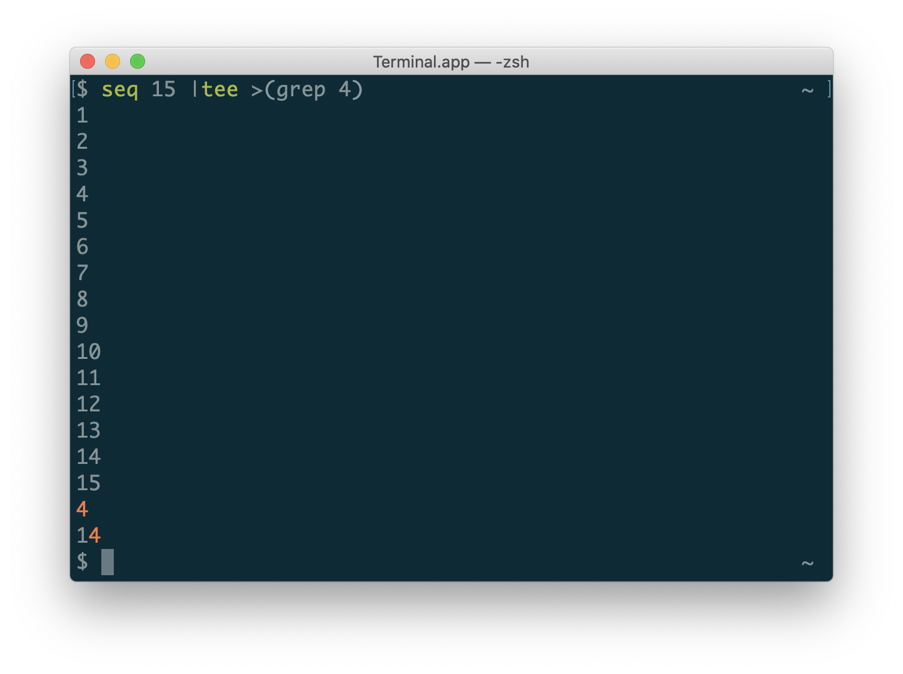

コマンドの結果を目で見ながら、パイプに渡すなどするときのこと。
よくやるのに忘れるのでメモする。
結論
some-command | tee >(pipe-command)
解説
tee コマンドを使うとできる。
肝は tee が input されたデータを、
これらに output することができるので、リダイレクト先をプロセス置換を使ってパイプに渡したいコマンドを指定することで標準出力に出しつつ、特定のコマンドにパイプすることができる。
実際のデモ:

tee は標準出力ではなく、標準エラー出力にも出すことができる。
普通に file descriptor 2番に出力する。
seq 15 | tee >(grep 4) >&2
# もしくは
seq 15 | tee >&2 >(grep 4)
よくやるシーンとして、CI のコンソールにも出しつつ、結果を GitHub コメントに POST する、といったときにやる。
notify() {
local comment template
comment="$(tee >(cat) >&2)" # pipe and output stderr
template="## Some results
\`\`\`
%s
\`\`\`
"
comment="$(printf "${template}" "${comment}")"
github_comment "${comment}"
}
some_output_func | notify
mercari/tfnotify も最初はこういう感じのシェルスクリプトから始まったことを思い出した。